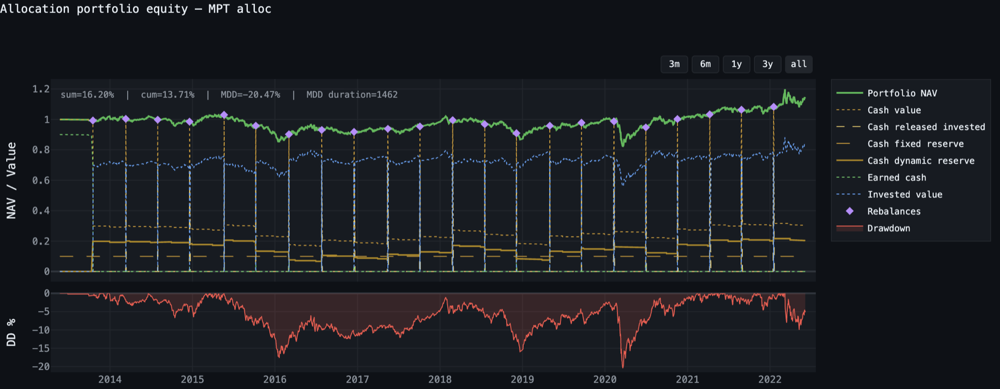

Validation d'une optimisation du ratio de Sharpe sur quatorze tests
Cette note applique la couche de validation à une stratégie d'allocation optimisée sur le ratio de Sharpe. Elle complète la première note avec cinq contrôles supplémentaires : le suivi du nombre d'essais réalisés sur les mêmes données, le Sharpe déflaté, la concentration de l'écart dans le temps, la réplication sur des univers non utilisés lors du développement et le registre de préinscription.
La stratégie n'est pas présentée ici comme un modèle d'investissement à retenir. Elle sert de support pour observer le comportement de la couche de validation et la manière dont les différents tests complètent, nuancent ou limitent les résultats du backtest.
La machinerie de portefeuille désigne ici tout ce qui relève du fonctionnement du portefeuille indépendamment de la règle de pondération : gestion du cash et des réserves, capacité d'emprunt ou de mobilisation de trésorerie, frais, devises et règles comptables.
Deux références sont utilisées dans toute la validation :
- le 1/N absolu, simplement équipondéré entre les actifs ;
- le 1/N apparié, équipondéré lui aussi, mais soumis à la même machinerie de portefeuille que la stratégie : gestion du cash et des réserves, règles de financement, frais, devises et comptabilité.
Cette seconde référence permet de comparer plus directement la règle d'allocation, sans mélanger son effet avec celui du fonctionnement du portefeuille.
- En échantillon, la stratégie obtient de meilleurs résultats que les deux références.Son CAGR est de 1,43 %, contre 1,01 % pour le 1/N absolu et 0,61 % pour le 1/N apparié. Son drawdown maximal est également plus faible : −20,47 %, contre −36,77 % pour le 1/N absolu. Cette comparaison reste descriptive : elle ne mesure pas la probabilité que cet écart se reproduise.
- Hors échantillon, cet avantage disparaît.Le CAGR de la stratégie atteint 1,58 %, contre 4,02 % pour le 1/N absolu et 2,08 % pour le 1/N apparié. L'écart avec le 1/N apparié passe ainsi de +0,82 point en échantillon à −0,50 point hors échantillon. Une partie de cette différence vient de la gestion du cash, plus pénalisante sur cette période haussière.
- La baisse de risque ne s'explique pas uniquement par une moindre exposition au marché.Pour obtenir la même volatilité que la stratégie, un portefeuille composé de 70,8 % de 1/N et 29,2 % de cash aurait produit un CAGR de 0,87 % avec un taux sans risque nul, contre 1,43 % pour la stratégie. L'écart disparaît toutefois lorsque le cash rapporte environ 2 %.
- Sur 80 nouveaux paniers, la même règle obtient généralement un résultat relatif plus favorable.L'écart médian de CAGR face au 1/N est de +2,34 points par an, et il est positif dans 75 % des univers. Le panier d'origine, avec un écart de −2,44 points, se situe au 11ᵉ percentile de cette distribution. Son mauvais résultat hors échantillon se situe donc dans la partie basse des résultats obtenus avec la même configuration.
- Les 22 décisions de rebalancement restent insuffisantes pour obtenir une estimation précise de l'écart.Le bootstrap donne un intervalle central à 90 % allant de −2,59 à +3,51 points, avec 59,6 % des rééchantillonnages produisant un écart positif. La mesure de concentration n'est pas publiée, l'écart cumulé étant légèrement inférieur au seuil prévu par le test.
- L'historique de recherche reste encore trop court pour corriger le Sharpe du nombre d'essais.Quatre configurations ont été enregistrées, correspondant à environ 1,6 essai indépendant. Ce nombre est insuffisant pour calculer un Sharpe déflaté de manière exploitable. Par ailleurs, la configuration n'avait pas été gelée avant le premier accès au holdout : les résultats hors échantillon sont donc conservés comme diagnostics, et non comme validation préinscrite.
Le test porte sur une allocation moyenne-variance glissante, long-only, avec un poids maximal de 35 % par actif. L'estimation est effectuée sur une fenêtre de 100 barres et le portefeuille est rebalancé toutes les 100 barres.
L'univers comprend cinq actifs : Brent, DAX, GBP/USD, S&P 500 et or. Les données sont quotidiennes et couvrent la période de mai 2013 à juin 2022, soit 2 298 barres et 22 décisions de rebalancement. Les 30 % les plus récents de l'historique sont réservés au hors échantillon, soit 1 126 barres.
La politique de portefeuille ajoute une réserve de trésorerie de 30 %, composée de 20 % de réserve dynamique et de 10 % de réserve fixe. Elle intègre également 2 % de frais de gestion annualisés, provisionnés au fil du temps et payés trimestriellement, ainsi qu'une commission de surperformance de 5 % avec high-water mark. Les coûts d'exécution sont prélevés directement pendant le run.
Le portefeuille fonctionne en capitalisation : les gains et pertes modifient l'equity disponible et donc la base à laquelle les poids suivants sont appliqués. Les mesures de performance et de risque sont calculées sur l'equity nette de la dette du portefeuille, et non à partir des rendements de chaque trade pris séparément.
Une marge supplémentaire est conservée dans la construction du signal : la fenêtre d'estimation s'arrête une barre avant la limite imposée par le délai d'exécution. L'effet de cette précaution est présenté dans la section consacrée aux limites.
| Le run testé | Valeur |
|---|---|
| Période | 2013-05-24 → 2022-06-06 |
| Décisions de rebalancement | 22 |
| Rendement cumulé | 13,71 % |
| Rendement annuel moyen / médian | 1,54 % / 1,85 % |
| Drawdown maximal | −20,47 % |
| Durée du drawdown maximal | 1 462 barres |
| Equity minimale / finale | 0,821 / 1,137 |
| VaR 95 % / CVaR 95 %, par barre | −0,82 % / −1,34 % |
Le rendement annuel moyen et le CAGR décrivent deux mesures différentes. Le premier correspond à la moyenne arithmétique des rendements annuels ; le second au taux composé reliant la valeur initiale à la valeur finale du portefeuille. Le CAGR est utilisé dans les comparaisons qui suivent.

Quatorze contrôles répartis en cinq catégories
La couche de validation comprend quatorze tests regroupés autour de cinq questions : l'intégrité des données et des mesures, l'existence d'un écart par rapport aux références, sa conservation hors de l'échantillon utilisé pour construire la stratégie, le risque de surapprentissage et la traçabilité du processus de validation. Les tableaux reproduits dans cette note correspondent directement aux sorties de l'outil. Certains tests ne sont pas exécutés sur ce run lorsque les données ou les conditions nécessaires ne sont pas réunies. L'ordre d'exécution est également contraint : les contrôles qui peuvent être réalisés sans utiliser l'échantillon réservé sont effectués avant les tests hors échantillon.
| Catégorie | Test | Ce qu'il demande | Sur ce run |
|---|---|---|---|
| Intégrité | validation_triage | Quelle série mesure-t-on, et combien d'observations ? | Prérequis |
validation_covariance | L'estimateur de covariance prédit-il quelque chose ? | Non lancé | |
| Détection | validation_baseline | L'écart existe-t-il contre l'équipondération ? | En échantillon oui, hors échantillon non |
validation_null_leverage | Détenir moins du panier aurait-il suffi ? | Dépend du taux | |
validation_null_sizing | L'écart vient-il des poids ou du dimensionnement ? | Non lancé | |
validation_purchasing_power | L'écart est-il produit là où il sert ? | Partiel | |
validation_mc | Quelle dispersion est compatible avec cet écart ? | Non concluant | |
| Rétention | validation_oos_retention | L'écart survit-il à la période mise de côté ? | Non retenu |
validation_cross_asset | L'écart survit-il à des univers jamais vus ? | Généralise | |
validation_edge_concentration | L'écart repose-t-il sur quelques fenêtres ? | Sous le seuil | |
| Surapprentissage | trial_counter_status | Combien de configurations distinctes ont été essayées ? | 4 essais, 1,6 effectifs |
validation_dsr | Le Sharpe survit-il au nombre d'essais ? | Indisponible | |
| Gouvernance | freeze_configuration | La configuration est-elle préinscrite avant le holdout ? | Non exercé |
validation_reverse_stress | Quel choc faut-il pour franchir un seuil qui compte ? | Page dédiée |
Comparaison avec les deux références
Les deux références sont définies en tête de page. Le tableau ci-dessous les compare à la stratégie sur l'échantillon complet.
| Annualisé | Stratégie | 1/N absolu | 1/N apparié | Écart vs absolu |
|---|---|---|---|---|
| Rendement (CAGR) | 1,43 % | 1,01 % | 0,61 % | +0,42 pt |
| Volatilité | 8,61 % | 12,15 % | 9,33 % | −3,54 pt |
| Drawdown maximal | −20,47 % | −36,77 % | −28,94 % | +16,30 pt |
| Calmar | 0,07 | 0,03 | 0,02 | +0,04 |
| Équivalent certain, γ = 3 | 0,68 % | −0,50 % | −0,27 % | +1,17 pt |
Résultat du test de baseline
Sur l'échantillon complet présenté ici, la stratégie affiche un CAGR de 1,43 %, contre 1,01 % pour le 1/N absolu et 0,61 % pour le 1/N apparié. Sa volatilité annualisée est également inférieure à celle du 1/N absolu : 8,61 % contre 12,15 %. Le drawdown maximal passe de −36,77 % pour cette référence à −20,47 % pour la stratégie. Avec un coefficient d'aversion au risque γ = 3, l'équivalent certain ressort à 0,68 % pour la stratégie, contre −0,50 % pour le 1/N absolu.
Le test de baseline classe donc l'écart comme positif sur cet échantillon. Il ne s'agit cependant pas d'un test statistique : la baseline étant déterministe, aucun niveau de significativité n'est associé à cette comparaison.
absolute : stripped reserve_cash_pct, fixed_cash_reserve · keeps execution
costs, management fee, performance fee, currencies
matched : every piece of machinery kept, only the weighting rule swapped
carrier : portfolio_equity(nav-borrowed) · basis D
VERDICT ADDS_VALUE — certainty equivalent higher by +1.17%/y at γ=3
no p-value: the allocation baseline is deterministic. This is a gap, not a test.

Décomposition de l'écart
L'objectif utilisé par la règle d'allocation est le ratio de Sharpe. Les différences observées ne portent cependant pas uniquement sur la volatilité. Par rapport au 1/N absolu, la volatilité passe de 12,15 % à 8,61 %, tandis que le drawdown maximal passe de −36,77 % à −20,47 %. Le CAGR augmente de 0,42 point. Par rapport au 1/N apparié, qui conserve la même politique de trésorerie, l'écart de CAGR atteint 0,82 point.
Effet de la politique de trésorerie
La comparaison entre les deux versions du 1/N permet d'observer l'effet de la machinerie de portefeuille indépendamment de la règle d'optimisation. Le CAGR du 1/N passe de 1,01 % dans sa version absolue à 0,61 % lorsque la politique de trésorerie est ajoutée, soit un écart de −0,40 point. Sur la stratégie, le même mécanisme représente un écart de −0,98 point entre la version avec et sans cette machinerie.
Effet propre de la règle de pondération
Une seconde comparaison retire la politique de trésorerie des deux portefeuilles. Dans cette configuration, la stratégie pleinement investie affiche un CAGR de 2,41 %, contre 1,01 % pour l'équipondération pleinement investie, soit un écart de +1,41 point. Lorsque la machinerie est active, cet écart est ramené à +0,82 point. La différence entre ces deux écarts correspond à l'interaction entre la règle de pondération et le fonctionnement de la trésorerie.
| Machinerie active | Machinerie retirée | Effet de la machinerie | |
|---|---|---|---|
| Poids de la stratégie | 1,43 % | 2,41 % | −0,98 pt |
| Équipondération | 0,61 % | 1,01 % | −0,40 pt |
| Interaction | −0,58 pt | ||
| Effet des poids | +0,82 pt | +1,41 pt |
Utilisation de la trésorerie disponible
La réserve dynamique peut être mobilisée au cours du run, mais son utilisation ne coïncide que partiellement avec les périodes de forte baisse du benchmark. Sur 16 épisodes au cours desquels le panier perd plus de 10 %, un déploiement de trésorerie est observé dans 4 cas. Au total, 24 épisodes de déploiement sont enregistrés sur la période. La trésorerie déployable représente en moyenne 19,3 % de la NAV. Le test validation_purchasing_power classe donc le mécanisme comme partiel : la réserve est effectivement utilisée, mais elle n'est pas systématiquement mobilisée pendant les épisodes de drawdown identifiés par le test.
deployable cash = cash_value - cash_fixed_reserve - cash_vault
benchmark drawdown episodes below -10% 16
episodes where cash was deployed 4 (25%)
deployment episodes 24
mean cash fraction of NAV 19.3%
Merton indifference γ for this cash level n/a — the benchmark did not
beat cash on this sample
VERDICT PARTIAL — deployed in only 4 of 16 drawdown episodes (25%)
— the option is exercised intermittently

Résultats sur la période réservée
Les mêmes comparaisons sont ensuite répétées sur les 1 126 barres mises de côté pendant la construction de la stratégie. Cette période présente une dynamique différente : le panier équipondéré progresse davantage que sur l'échantillon précédent.
| Annualisé | Stratégie | 1/N absolu | 1/N apparié | Écart vs absolu |
|---|---|---|---|---|
| Rendement (CAGR) | 1,58 % | 4,02 % | 2,08 % | −2,44 pt |
| Volatilité | 10,40 % | 13,35 % | 10,23 % | −2,95 pt |
| Drawdown maximal | −23,14 % | −27,00 % | −21,36 % | +3,86 pt |
| Calmar | 0,07 | 0,15 | 0,10 | −0,08 |
| Équivalent certain, γ = 3 | 0,48 % | 2,17 % | 1,02 % | −1,69 pt |
Sur cette période, la stratégie affiche un CAGR de 1,58 %, contre 4,02 % pour le 1/N absolu et 2,08 % pour le 1/N apparié. La volatilité reste inférieure à celle du 1/N absolu, avec 10,40 % contre 13,35 %, mais l'écart de rendement devient négatif. L'équivalent certain à γ = 3 s'établit à 0,48 % pour la stratégie, contre 2,17 % pour le 1/N absolu. Le test de baseline ne conserve donc pas l'écart positif observé en échantillon. L'écart entre la stratégie et le 1/N apparié passe de +0,82 point en échantillon à −0,50 point hors échantillon.
La politique de trésorerie joue également un rôle plus important sur cette période. L'écart entre les deux versions du 1/N atteint 1,93 point, contre 0,40 point précédemment. Sur une période davantage orientée à la hausse, conserver une fraction importante du portefeuille en trésorerie réduit mécaniquement la participation à cette hausse. Cette décomposition montre que la différence hors échantillon ne provient pas uniquement de la règle de pondération.
VERDICT ADDS_NOTHING — certainty equivalent lower by -1.69%/y at γ=3
— equal_weight absolute does better for a risk-averse investor
no p-value: the allocation baseline is deterministic. This is a gap, not a test.


Une réduction du risque par simple désinvestissement produit-elle le même résultat ?
Une stratégie peut afficher simultanément un rendement inférieur à son benchmark et une volatilité plus faible. Dans ce cas, il faut déterminer si cette réduction du risque provient réellement de la règle d'allocation ou si un résultat comparable aurait pu être obtenu simplement en détenant une fraction du benchmark et le reste en liquidités. Le test construit donc plusieurs combinaisons entre le panier équipondéré et le cash, puis compare la stratégie à ces portefeuilles pour un même niveau de volatilité ou de drawdown. Le taux sans risque est testé sur plusieurs valeurs plutôt que fixé à une hypothèse unique.
| Taux sans risque | Fraction du panier | Mélange | Écart à vol égale | Écart à drawdown égal |
|---|---|---|---|---|
| 0,00 % | 0,708 | 0,87 % | +0,56 pt | +0,72 pt |
| 1,00 % | 0,708 | 1,16 % | +0,27 pt | +0,24 pt |
| 2,00 % | 0,708 | 1,45 % | −0,02 pt | −0,13 pt |
| 4,00 % | 0,708 | 2,03 % | −0,60 pt | −0,78 pt |
À volatilité équivalente, la fraction du panier nécessaire est de 70,8 %. Avec un taux sans risque de 0 %, le CAGR du portefeuille mixte est de 0,87 %, soit 0,56 point de moins que la stratégie. À 1 %, l'écart est encore de +0,27 point en faveur de la stratégie. Autour de 2 %, les deux résultats deviennent pratiquement équivalents, puis la combinaison panier-cash affiche un rendement supérieur lorsque le taux sans risque augmente davantage. Le résultat dépend donc directement de l'hypothèse retenue pour la rémunération du cash. Sur cet échantillon, le point d'équilibre se situe légèrement en dessous de 2 %.
risk_free w (vol-matched) blend CAGR strategy CAGR gap at equal vol 0.00% 0.708 0.87% 1.43% +0.56 pt 1.00% 0.708 1.16% 1.43% +0.27 pt 2.00% 0.708 1.45% 1.43% -0.02 pt 4.00% 0.708 2.03% 1.43% -0.60 pt

Comportement de la même configuration sur des paniers non utilisés auparavant
Le test précédent reste limité à un univers de cinq actifs. validation_cross_asset conserve la configuration enregistrée et l'applique sans modification à 80 nouveaux paniers de cinq actifs, tirés dans un pool qui n'a pas servi au développement initial. Le test est réalisé sur la période hors échantillon. Les actifs et la période sont donc tous deux distincts de ceux utilisés pour construire la stratégie. Dix-neuf actifs du pool disposent de données couvrant toute la fenêtre. Un vingtième est exclu en raison d'une discontinuité dans son historique.
| Écart contre 1/N absolu | 5 % | 25 % | 50 % | 75 % | 95 % |
|---|---|---|---|---|---|
| Écart de CAGR | −3,62 % | +0,04 % | +2,34 % | +4,71 % | +8,54 % |
| Écart d'équivalent certain, γ = 3 | +7,55 % | +11,80 % | +13,89 % | +16,57 % | +18,48 % |
| Écart de drawdown | +6,31 % | +8,85 % | +10,19 % | +11,39 % | +12,68 % |
La distribution des 80 univers présente un écart médian de CAGR de +2,34 % par an par rapport au 1/N absolu. Le premier quartile se situe à +0,04 %, tandis que le cinquième percentile atteint −3,62 %. L'univers utilisé dans le test initial présente un écart de −2,44 %. Il se situe au 11ᵉ percentile de la distribution obtenue sur les 80 univers. Dans 75 % des univers tirés, l'écart de CAGR est positif. Le résultat hors échantillon négatif de l'univers d'origine apparaît donc dans la partie basse de la distribution obtenue avec la même règle appliquée aux autres paniers. Ce test ne permet pas d'attribuer définitivement cette différence à une cause unique, mais il montre que le résultat observé sur les cinq actifs d'origine n'est pas représentatif de la médiane des univers testés.
eligible pool 19 ticker(s) cover the window; 1 dropped (gap inside window) draws 80 universes of 5 assets, uniform (not stratified), seed 0 phase oos — DOUBLE OOS: unseen assets x unseen period campaigns run 3 (registered as a diagnostic in the freeze registry) original universe CAGR edge -2.44% → percentile rank 10 of 80 (11th) fraction of universes with a positive edge 75% VERDICT GENERALISES — the median edge across 80 unseen universes is +2.34%/y That is not the profile of a hand-picked basket.

Trois campagnes de tirage ont été exécutées et sont enregistrées dans le registre. Cette information permet de conserver la trace du nombre de fois où le test cross-asset a été relancé.
Tests non conclusifs ou non applicables
Tous les contrôles ne produisent pas nécessairement une mesure exploitable. La couche de validation distingue un résultat négatif d'un résultat qui ne peut pas être interprété avec les données disponibles. Dans ce second cas, la sortie indique explicitement la raison pour laquelle aucune conclusion n'est produite.
Monte-Carlo
Le test Monte-Carlo utilise un bootstrap par blocs appliqué aux 22 périodes de décision et génère 10 000 chemins. L'écart de CAGR réalisé est de +0,44 %. La médiane de la distribution rééchantillonnée est également de +0,44 %, ce qui indique que le bootstrap reproduit correctement le centre de la série observée. La dispersion reste cependant importante : l'intervalle central à 90 % s'étend de −2,59 % à +3,51 %, et la probabilité d'obtenir un écart positif dans le rééchantillonnage est de 59,6 %. Avec seulement 22 périodes de décision, le test ne permet donc pas de distinguer clairement l'écart observé de la variabilité compatible avec cet échantillon.
centering golden PASS — bootstrap median +0.44% vs realised +0.44%,
gap +0.00% against a declared tolerance of 0.07%
relative CAGR realised +0.44% 5% -2.59% 50% +0.44% 95% +3.51%
P(edge > 0) 59.6%
WARNING LOW BLOCK COUNT — only 22 decision periods are observed.
VERDICT INCONCLUSIVE — the central 90% resampling interval crosses zero

Concentration de l'écart
Ce contrôle cherche à déterminer si l'écart cumulé repose principalement sur un petit nombre de fenêtres. Avant de calculer cette concentration, l'outil vérifie que l'écart total est suffisamment éloigné de zéro pour qu'une décomposition en parts ait un sens. Ici, l'écart logarithmique cumulé atteint +0,0378, pour un seuil requis de +0,0389. La différence est faible mais place le résultat juste sous le niveau minimal prévu par le test. La mesure de concentration n'est donc pas publiée.
VERDICT NOT_APPLICABLE — the cumulative edge is not positive enough,
so a share of it has no meaning.
Cumulative log edge +0.0378 against a required +0.0389 (0.25 sigma of the
0.1557 one-sigma envelope of a driftless walk with the same per-period
dispersion). Shares of a total near zero explode, and shares of a negative
total change sign; neither is published.
Sharpe déflaté
Le Sharpe déflaté vise à corriger le ratio de Sharpe observé pour tenir compte du nombre de configurations essayées sur les mêmes données. Le registre contient ici quatre configurations distinctes. Ce nombre est insuffisant pour estimer de manière stable la dispersion des ratios de Sharpe entre les essais. L'outil exige au minimum dix observations pour effectuer cette correction et classe donc le Sharpe déflaté comme indisponible.
trials counted 4 distinct configurations = 4 trials
effective trials 1.6 (measured on 4 decision series)
deflated sharpe UNAVAILABLE
why only 4 trial(s) carry a Sharpe on this dataset; the deflated
Sharpe needs the DISPERSION across trials and 10 is the floor
below which that variance is noise.
honesty Runs executed before the counter existed are not counted: any
deflation is a LOWER BOUND on the correction.
Le compteur estime par ailleurs que les quatre configurations correspondent à environ 1,6 essai indépendant. Cette valeur tient compte de la corrélation entre les séries de décisions produites par les différentes configurations : plusieurs variantes proches ne sont donc pas assimilées à autant de recherches entièrement indépendantes.

Préinscription
Le système de gel de configuration enregistre une version immuable de la configuration, accompagnée des empreintes de la configuration et des données. Il conserve également la trace des accès à l'échantillon réservé. Dans le cas de cette note, la configuration n'avait pas été gelée avant le premier accès au holdout. Le registre classe donc les résultats hors échantillon comme obtenus après accès à la période réservée, et non comme une validation préinscrite. Cette distinction ne modifie pas les valeurs calculées, mais elle modifie leur statut méthodologique : elles peuvent être utilisées comme diagnostics, pas comme confirmation scellée d'une hypothèse préalablement enregistrée.


Reproductibilité des mesures
Série utilisée
Les mesures de performance et de risque sont calculées sur une série commune : l'equity du portefeuille nette de la dette, en fréquence journalière. Cette convention permet de tenir compte simultanément de la taille des positions, des positions ouvertes au même moment, du cash et de l'évolution globale du capital. Les rendements de trades pris individuellement ne constituent donc pas la série de référence pour les mesures de risque du mode allocation.
Construction des baselines
Les baselines sont exécutées dans le moteur comme des portefeuilles complets. Elles utilisent les mêmes mécanismes comptables, les mêmes devises et les mêmes coûts que la stratégie. Dans le cas du 1/N apparié, seule la règle de pondération est remplacée. Cette méthode évite d'attribuer à la règle d'allocation un écart qui proviendrait simplement de différences de frais, de traitement du cash ou de conventions comptables entre les deux séries.
Historique des essais
Les configurations testées ainsi que les accès au holdout sont inscrits dans des registres append-only. Le compteur est associé aux données utilisées. Plusieurs configurations essayées sur le même jeu de données contribuent donc au même historique d'essais, même si elles correspondent à des variantes ou à des stratégies portant des noms différents. L'objectif est de conserver une mesure du nombre de recherches effectuées sur un même échantillon avant de retenir un résultat.
Limites et portée des résultats
Nombre de décisions
Le run contient 2 298 barres mais seulement 22 décisions de rebalancement. Pour les tests portant sur le comportement de la règle d'allocation, la taille d'échantillon pertinente est donc beaucoup plus proche de 22 que de 2 298. Cette taille limite fortement la précision avec laquelle un écart annuel de quelques points peut être estimé. Le bootstrap de la section précédente en donne une illustration directe.
Niveau de performance absolue
Le CAGR du portefeuille testé est de 1,43 % sur l'ensemble de la période, avec un drawdown maximal de −20,47 %. Ces valeurs doivent être distinguées de la comparaison relative avec le 1/N. Une règle peut améliorer certaines caractéristiques par rapport à une référence sans que le portefeuille obtenu présente pour autant un couple rendement-risque attractif en valeur absolue. Sur cet échantillon, le benchmark lui-même affiche une performance faible par rapport au cash selon les hypothèses utilisées dans certains tests.
Dépendance au régime de marché
La période étudiée n'est pas homogène. Entre 2014 et 2021, le panier passe une part importante du temps en drawdown et présente relativement peu de tendance nette. La période hors échantillon est davantage orientée à la hausse. La stratégie et le 1/N sont soumis aux mêmes régimes, ce qui permet leur comparaison sur chaque période. En revanche, les écarts observés ici ne peuvent pas être transposés directement à d'autres régimes de marché. La différence entre les résultats en échantillon et hors échantillon montre notamment que l'effet de la réserve de trésorerie dépend fortement de la trajectoire du panier.
Composition du pool cross-asset
Le pool utilisé pour le test cross-asset est déséquilibré : quatorze des vingt actifs éligibles sont des cryptomonnaies. Cette composition provient principalement des contraintes de disponibilité des historiques sur l'ensemble de la fenêtre. La médiane obtenue sur les 80 univers doit donc être interprétée comme un résultat sur ce pool particulier, caractérisé par une dispersion et une volatilité élevées. L'écart d'équivalent certain, notamment, est fortement influencé par la réduction de volatilité obtenue sur les paniers contenant des cryptomonnaies. Il ne peut pas être directement extrapolé à un univers multi-actifs plus conventionnel.
Coûts d'exécution sur les univers tirés
Pour les univers cross-asset, les coûts spécifiques définis pour les cinq actifs d'origine ne peuvent pas être réutilisés. Les actifs tirés utilisent donc les coûts génériques correspondant à leur place de cotation. La stratégie et sa référence 1/N sont soumises au même traitement, ce qui limite l'effet de cette approximation dans la comparaison de premier ordre. Elle peut toutefois modifier l'écart relatif lorsque les deux règles présentent des turnovers différents. Une sous-estimation des coûts favorise davantage la règle qui effectue le plus de transactions.
Biais de survie
La couche de validation utilise l'univers d'actifs qui lui est fourni. Elle ne vérifie pas automatiquement si cet univers contient uniquement des actifs encore cotés aujourd'hui ou s'il reproduit fidèlement l'univers disponible à chaque date historique. Un biais de survie peut donc subsister dans le pool utilisé pour les tirages cross-asset. Il affecterait aussi bien la stratégie que les baselines exécutées sur ces mêmes actifs.
Décalage de la fenêtre de décision
Le run présenté utilise une fenêtre d'estimation arrêtée une barre avant la limite déjà imposée par le délai d'exécution. Sans cette marge supplémentaire, l'écart de CAGR en échantillon est de +0,46 point au lieu de +0,42 point. La différence entre les deux configurations est donc de 0,04 point sur cet échantillon. Le résultat observé ne dépend pas uniquement de l'information contenue dans la dernière barre disponible.
Relation avec la première note de validation
La première note et celle-ci portent sur deux règles différentes. La première étudiait une optimisation liée à la durée du drawdown ; celle-ci utilise une optimisation du ratio de Sharpe. Les univers testés diffèrent également. Les deux expériences indiquent surtout que l'écart entre une allocation optimisée et une équipondération varie avec les caractéristiques de l'univers et le régime de marché. Cette sensibilité rejoint le problème général étudié dans la littérature sur la comparaison entre allocations optimisées et règles simples d'équipondération. Les expériences présentées ici ne constituent toutefois pas une réplication de ces travaux.
Validating a Sharpe ratio optimisation across fourteen tests
This note applies the validation layer to an allocation strategy optimised on the Sharpe ratio. It extends the first note with five additional controls: tracking the number of trials run on the same data, the deflated Sharpe, the concentration of the edge over time, replication across universes not used during development, and the preregistration ledger.
The strategy is not presented here as an investment model to adopt. It serves as material for observing how the validation layer behaves, and how the different tests complete, qualify or limit the results of the backtest.
Portfolio machinery here means everything that belongs to the running of the portfolio independently of the weighting rule: cash and reserve management, borrowing or cash mobilisation capacity, fees, currencies and accounting rules.
Two references are used throughout the validation:
- 1/N absolute, simply equal-weighted across the assets;
- 1/N matched, equal-weighted as well, but subject to the same portfolio machinery as the strategy: cash and reserve management, funding rules, fees, currencies and accounting.
This second reference allows the allocation rule to be compared more directly, without mixing its effect with that of the portfolio's operation.
- In sample, the strategy performs better than both references.Its CAGR is 1.43 %, against 1.01 % for 1/N absolute and 0.61 % for 1/N matched. Its maximum drawdown is also lower: −20.47 %, against −36.77 % for 1/N absolute. This comparison stays descriptive: it does not measure the probability that the gap repeats.
- Out of sample, that advantage disappears.The strategy's CAGR reaches 1.58 %, against 4.02 % for 1/N absolute and 2.08 % for 1/N matched. The gap against 1/N matched thus moves from +0.82 points in sample to −0.50 points out of sample. Part of that difference comes from cash management, more costly over this rising period.
- The reduction in risk is not explained by lower market exposure alone.To obtain the same volatility as the strategy, a portfolio made of 70.8 % 1/N and 29.2 % cash would have produced a CAGR of 0.87 % with a zero risk-free rate, against 1.43 % for the strategy. The gap disappears, however, once cash returns around 2 %.
- Across 80 new baskets, the same rule generally obtains a more favourable relative result.The median CAGR edge against 1/N is +2.34 points a year, and it is positive in 75 % of the universes. The original basket, with an edge of −2.44 points, sits at the 11th percentile of that distribution. Its poor out-of-sample result therefore sits in the lower part of the results obtained with the same configuration.
- The 22 rebalancing decisions remain insufficient for a precise estimate of the gap.The bootstrap gives a central 90 % interval running from −2.59 to +3.51 points, with 59.6 % of the resamplings producing a positive edge. The concentration measure is not published, the cumulative edge being slightly below the threshold the test requires.
- The research history is still too short to correct the Sharpe for the number of trials.Four configurations have been recorded, corresponding to about 1.6 independent trials. That number is insufficient to compute a usable deflated Sharpe. Furthermore, the configuration had not been frozen before the first holdout access: the out-of-sample results are therefore kept as diagnostics, not as preregistered validation.
The test covers a rolling mean-variance allocation, long-only, with a maximum weight of 35 % per asset. Estimation runs over a 100-bar window and the portfolio is rebalanced every 100 bars.
The universe holds five assets: Brent, DAX, GBP/USD, S&P 500 and gold. The data is daily and covers May 2013 to June 2022, that is 2,298 bars and 22 rebalancing decisions. The most recent 30 % of the history is reserved for out-of-sample use, that is 1,126 bars.
The portfolio policy adds a 30 % cash reserve, made of a 20 % dynamic reserve and a 10 % fixed reserve. It also carries a 2 % annualised management fee, accrued over time and paid quarterly, together with a 5 % performance fee with a high-water mark. Execution costs are charged directly during the run.
The portfolio compounds: gains and losses change the available equity and therefore the base the following weights are applied to. Performance and risk are measured on portfolio equity net of debt, not from the returns of each trade taken separately.
An additional margin is kept in the signal construction: the estimation window stops one bar before the limit imposed by the execution delay. The effect of that precaution is presented in the section on limits.
| The tested run | Value |
|---|---|
| Period | 2013-05-24 → 2022-06-06 |
| Rebalancing decisions | 22 |
| Cumulative return | 13.71 % |
| Mean / median annual return | 1.54 % / 1.85 % |
| Maximum drawdown | −20.47 % |
| Maximum drawdown duration | 1,462 bars |
| Minimum / ending equity | 0.821 / 1.137 |
| VaR 95 % / CVaR 95 %, per bar | −0.82 % / −1.34 % |
Mean annual return and CAGR describe two different measures. The first is the arithmetic mean of the annual returns; the second the compounded rate linking the initial to the final value of the portfolio. The CAGR is the one used in the comparisons that follow.
Fourteen controls across five categories
The validation layer holds fourteen tests grouped around five questions: the integrity of the data and of the measures, the existence of a gap against the references, whether it holds outside the sample used to build the strategy, the risk of overfitting, and the traceability of the validation process. The tables reproduced in this note come directly from the tool's output. Some tests are not run here when the data or the required conditions are not met. The order of execution is constrained too: controls that can be carried out without using the reserved sample are performed before the out-of-sample tests.
| Category | Test | What it asks | On this run |
|---|---|---|---|
| Integrity | validation_triage | Which series is measured, and how many observations? | Prerequisite |
validation_covariance | Does the covariance estimator predict anything? | Not run | |
| Detection | validation_baseline | Is there a gap against equal weighting? | In sample yes, out of sample no |
validation_null_leverage | Would holding less of the basket have done? | Depends on the rate | |
validation_null_sizing | Does the gap come from weights or from sizing? | Not run | |
validation_purchasing_power | Is the gap produced where it helps? | Partial | |
validation_mc | What dispersion is compatible with this gap? | Inconclusive | |
| Retention | validation_oos_retention | Does the gap survive the held-out period? | Not retained |
validation_cross_asset | Does the gap survive universes never seen? | Generalises | |
validation_edge_concentration | Does the gap rest on a few windows? | Below threshold | |
| Overfitting | trial_counter_status | How many distinct configurations were tried? | 4 trials, 1.6 effective |
validation_dsr | Does the Sharpe survive the trial count? | Unavailable | |
| Governance | freeze_configuration | Is the configuration preregistered before the holdout? | Not exercised |
validation_reverse_stress | What shock crosses a threshold that matters? | Dedicated page |
Comparison with the two references
Both references are defined at the top of the page. The table below compares them with the strategy over the full sample.
| Annualised | Strategy | 1/N absolute | 1/N matched | Gap vs absolute |
|---|---|---|---|---|
| Return (CAGR) | 1.43 % | 1.01 % | 0.61 % | +0.42 pt |
| Volatility | 8.61 % | 12.15 % | 9.33 % | −3.54 pt |
| Maximum drawdown | −20.47 % | −36.77 % | −28.94 % | +16.30 pt |
| Calmar | 0.07 | 0.03 | 0.02 | +0.04 |
| Certainty equivalent, γ = 3 | 0.68 % | −0.50 % | −0.27 % | +1.17 pt |
Result of the baseline test
Over the full sample presented here, the strategy shows a CAGR of 1.43 %, against 1.01 % for 1/N absolute and 0.61 % for 1/N matched. Its annualised volatility is also lower than that of 1/N absolute: 8.61 % against 12.15 %. Maximum drawdown moves from −36.77 % for that reference to −20.47 % for the strategy. With a risk aversion coefficient γ = 3, the certainty equivalent comes out at 0.68 % for the strategy, against −0.50 % for 1/N absolute.
The baseline test therefore classes the gap as positive on this sample. It is not a statistical test, however: the baseline being deterministic, no significance level is attached to this comparison.
absolute : stripped reserve_cash_pct, fixed_cash_reserve · keeps execution
costs, management fee, performance fee, currencies
matched : every piece of machinery kept, only the weighting rule swapped
carrier : portfolio_equity(nav-borrowed) · basis D
VERDICT ADDS_VALUE — certainty equivalent higher by +1.17%/y at γ=3
no p-value: the allocation baseline is deterministic. This is a gap, not a test.
Decomposition of the gap
The objective used by the allocation rule is the Sharpe ratio. The observed differences do not bear on volatility alone, however. Against 1/N absolute, volatility moves from 12.15 % to 8.61 %, while maximum drawdown moves from −36.77 % to −20.47 %. The CAGR increases by 0.42 points. Against 1/N matched, which keeps the same cash policy, the CAGR gap reaches 0.82 points.
Effect of the cash policy
Comparing the two versions of 1/N shows the effect of the portfolio machinery independently of the optimisation rule. The CAGR of 1/N moves from 1.01 % in its absolute version to 0.61 % once the cash policy is added, a gap of −0.40 points. On the strategy, the same mechanism represents a gap of −0.98 points between the versions with and without that machinery.
Isolated effect of the weighting rule
A second comparison removes the cash policy from both portfolios. In that configuration the fully invested strategy shows a CAGR of 2.41 %, against 1.01 % for fully invested equal weighting, a gap of +1.41 points. When the machinery is active, that gap comes down to +0.82 points. The difference between the two gaps is the interaction between the weighting rule and the working of the cash policy.
| Machinery on | Machinery off | Machinery effect | |
|---|---|---|---|
| Strategy weights | 1.43 % | 2.41 % | −0.98 pt |
| Equal weight | 0.61 % | 1.01 % | −0.40 pt |
| Interaction | −0.58 pt | ||
| Weights effect | +0.82 pt | +1.41 pt |
Use of the available cash
The dynamic reserve can be drawn on during the run, but its use only partly coincides with the periods when the benchmark falls sharply. Across 16 episodes in which the basket loses more than 10 %, a cash deployment is observed in 4 cases. In total, 24 deployment episodes are recorded over the period. Deployable cash averages 19.3 % of NAV. The validation_purchasing_power test therefore classes the mechanism as partial: the reserve is indeed used, but it is not systematically drawn on during the drawdown episodes the test identifies.
deployable cash = cash_value - cash_fixed_reserve - cash_vault
benchmark drawdown episodes below -10% 16
episodes where cash was deployed 4 (25%)
deployment episodes 24
mean cash fraction of NAV 19.3%
Merton indifference γ for this cash level n/a — the benchmark did not
beat cash on this sample
VERDICT PARTIAL — deployed in only 4 of 16 drawdown episodes (25%)
— the option is exercised intermittently
Results over the reserved period
The same comparisons are then repeated over the 1,126 bars set aside during the construction of the strategy. This period shows a different dynamic: the equal-weighted basket rises more than over the previous sample.
| Annualised | Strategy | 1/N absolute | 1/N matched | Gap vs absolute |
|---|---|---|---|---|
| Return (CAGR) | 1.58 % | 4.02 % | 2.08 % | −2.44 pt |
| Volatility | 10.40 % | 13.35 % | 10.23 % | −2.95 pt |
| Maximum drawdown | −23.14 % | −27.00 % | −21.36 % | +3.86 pt |
| Calmar | 0.07 | 0.15 | 0.10 | −0.08 |
| Certainty equivalent, γ = 3 | 0.48 % | 2.17 % | 1.02 % | −1.69 pt |
Over this period the strategy shows a CAGR of 1.58 %, against 4.02 % for 1/N absolute and 2.08 % for 1/N matched. Volatility stays below that of 1/N absolute, at 10.40 % against 13.35 %, but the return gap turns negative. The certainty equivalent at γ = 3 comes out at 0.48 % for the strategy, against 2.17 % for 1/N absolute. The baseline test therefore does not retain the positive gap observed in sample. The gap between the strategy and 1/N matched moves from +0.82 points in sample to −0.50 points out of sample.
The cash policy also plays a larger role over this period. The gap between the two versions of 1/N reaches 1.93 points, against 0.40 points previously. Over a period more oriented upwards, keeping a large fraction of the portfolio in cash mechanically reduces participation in that rise. This decomposition shows that the out-of-sample difference does not come from the weighting rule alone.
VERDICT ADDS_NOTHING — certainty equivalent lower by -1.69%/y at γ=3
— equal_weight absolute does better for a risk-averse investor
no p-value: the allocation baseline is deterministic. This is a gap, not a test.
Does reducing risk by simply holding less produce the same result?
A strategy can show both a lower return than its benchmark and a lower volatility. In that case it must be determined whether the reduction in risk really comes from the allocation rule or whether a comparable result could have been obtained by simply holding a fraction of the benchmark and the rest in cash. The test therefore builds several combinations of the equal-weighted basket and cash, then compares the strategy with those portfolios at the same level of volatility or drawdown. The risk-free rate is tested across several values rather than fixed at a single assumption.
| Risk-free rate | Fraction of basket | Blend | Gap at equal vol | Gap at equal drawdown |
|---|---|---|---|---|
| 0.00 % | 0.708 | 0.87 % | +0.56 pt | +0.72 pt |
| 1.00 % | 0.708 | 1.16 % | +0.27 pt | +0.24 pt |
| 2.00 % | 0.708 | 1.45 % | −0.02 pt | −0.13 pt |
| 4.00 % | 0.708 | 2.03 % | −0.60 pt | −0.78 pt |
At equivalent volatility, the required fraction of the basket is 70.8 %. With a 0 % risk-free rate, the CAGR of the mixed portfolio is 0.87 %, that is 0.56 points less than the strategy. At 1 %, the gap is still +0.27 points in favour of the strategy. Around 2 % the two results become practically equivalent, then the basket-cash combination shows a higher return as the risk-free rate increases further. The result therefore depends directly on the assumption made about the return on cash. On this sample the break-even point sits slightly below 2 %.
risk_free w (vol-matched) blend CAGR strategy CAGR gap at equal vol 0.00% 0.708 0.87% 1.43% +0.56 pt 1.00% 0.708 1.16% 1.43% +0.27 pt 2.00% 0.708 1.45% 1.43% -0.02 pt 4.00% 0.708 2.03% 1.43% -0.60 pt
Behaviour of the same configuration on baskets not previously used
The previous test remains limited to one universe of five assets. validation_cross_asset keeps the recorded configuration and applies it without modification to 80 new baskets of five assets, drawn from a pool that was not used in the initial development. The test is run over the out-of-sample period. Both the assets and the period are therefore distinct from those used to build the strategy. Nineteen assets in the pool have data covering the whole window. A twentieth is excluded because of a discontinuity in its history.
| Edge against 1/N absolute | 5 % | 25 % | 50 % | 75 % | 95 % |
|---|---|---|---|---|---|
| CAGR edge | -3.62 % | +0.04 % | +2.34 % | +4.71 % | +8.54 % |
| Certainty equivalent edge, γ = 3 | +7.55 % | +11.80 % | +13.89 % | +16.57 % | +18.48 % |
| Drawdown edge | +6.31 % | +8.85 % | +10.19 % | +11.39 % | +12.68 % |
The distribution across the 80 universes shows a median CAGR edge of +2.34 % a year against 1/N absolute. The first quartile sits at +0.04 %, while the fifth percentile reaches −3.62 %. The universe used in the initial test shows an edge of −2.44 %. It sits at the 11th percentile of the distribution obtained across the 80 universes. In 75 % of the drawn universes the CAGR edge is positive. The negative out-of-sample result of the original universe therefore appears in the lower part of the distribution obtained with the same rule applied to other baskets. This test does not allow that difference to be attributed definitively to a single cause, but it shows that the result observed on the five original assets is not representative of the median of the tested universes.
eligible pool 19 ticker(s) cover the window; 1 dropped (gap inside window) draws 80 universes of 5 assets, uniform (not stratified), seed 0 phase oos — DOUBLE OOS: unseen assets x unseen period campaigns run 3 (registered as a diagnostic in the freeze registry) original universe CAGR edge -2.44% → percentile rank 10 of 80 (11th) fraction of universes with a positive edge 75% VERDICT GENERALISES — the median edge across 80 unseen universes is +2.34%/y That is not the profile of a hand-picked basket.
Three draw campaigns were run and are recorded in the ledger. That information keeps track of how many times the cross-asset test was relaunched.
Inconclusive or non-applicable tests
Not every control necessarily produces a usable measure. The validation layer distinguishes a negative result from a result that cannot be interpreted with the available data. In the second case, the output states explicitly why no conclusion is produced.
Monte Carlo
The Monte Carlo test uses a block bootstrap applied to the 22 decision periods and generates 10,000 paths. The realised CAGR edge is +0.44 %. The median of the resampled distribution is also +0.44 %, which indicates that the bootstrap correctly reproduces the centre of the observed series. The dispersion remains large, however: the central 90 % interval runs from −2.59 % to +3.51 %, and the probability of a positive edge in the resampling is 59.6 %. With only 22 decision periods, the test therefore does not allow the observed edge to be clearly distinguished from the variability compatible with this sample.
centering golden PASS — bootstrap median +0.44% vs realised +0.44%,
gap +0.00% against a declared tolerance of 0.07%
relative CAGR realised +0.44% 5% -2.59% 50% +0.44% 95% +3.51%
P(edge > 0) 59.6%
WARNING LOW BLOCK COUNT — only 22 decision periods are observed.
VERDICT INCONCLUSIVE — the central 90% resampling interval crosses zero
Concentration of the edge
This control seeks to determine whether the cumulative edge rests mainly on a small number of windows. Before computing that concentration, the tool checks that the total edge is far enough from zero for a decomposition into shares to mean anything. Here the cumulative log edge reaches +0.0378, against a required threshold of +0.0389. The difference is small but places the result just below the minimum level the test requires. The concentration measure is therefore not published.
VERDICT NOT_APPLICABLE — the cumulative edge is not positive enough,
so a share of it has no meaning.
Cumulative log edge +0.0378 against a required +0.0389 (0.25 sigma of the
0.1557 one-sigma envelope of a driftless walk with the same per-period
dispersion). Shares of a total near zero explode, and shares of a negative
total change sign; neither is published.
Deflated Sharpe
The deflated Sharpe aims to correct the observed Sharpe ratio for the number of configurations tried on the same data. The ledger here contains four distinct configurations. That number is insufficient to estimate the dispersion of the Sharpe ratios across trials in a stable way. The tool requires at least ten observations to apply this correction and therefore classes the deflated Sharpe as unavailable.
trials counted 4 distinct configurations = 4 trials
effective trials 1.6 (measured on 4 decision series)
deflated sharpe UNAVAILABLE
why only 4 trial(s) carry a Sharpe on this dataset; the deflated
Sharpe needs the DISPERSION across trials and 10 is the floor
below which that variance is noise.
honesty Runs executed before the counter existed are not counted: any
deflation is a LOWER BOUND on the correction.
The counter also estimates that the four configurations correspond to about 1.6 independent trials. That value accounts for the correlation between the decision series produced by the different configurations: several close variants are therefore not treated as that many entirely independent searches.
Preregistration
The configuration freeze system records an immutable version of the configuration, together with fingerprints of the configuration and of the data. It also keeps track of accesses to the reserved sample. In the case of this note, the configuration had not been frozen before the first holdout access. The ledger therefore classes the out-of-sample results as obtained after access to the reserved period, and not as a preregistered validation. This distinction does not change the computed values, but it changes their methodological status: they can be used as diagnostics, not as sealed confirmation of a previously recorded hypothesis.
Reproducibility of the measures
Series used
Performance and risk are measured on a common series: portfolio equity net of debt, at daily frequency. That convention accounts at once for position size, for positions open at the same time, for cash and for the overall path of capital. Individual trade returns are therefore not the reference series for the risk measures of allocation mode.
Construction of the baselines
The baselines are executed in the engine as complete portfolios. They use the same accounting machinery, the same currencies and the same costs as the strategy. In the case of 1/N matched, only the weighting rule is replaced. This method avoids attributing to the allocation rule a gap that would simply come from differences in fees, cash treatment or accounting conventions between the two series.
Trial history
The tested configurations and the holdout accesses are written to append-only ledgers. The counter is tied to the data used. Several configurations tried on the same dataset therefore contribute to the same trial history, even when they correspond to variants or to strategies bearing different names. The aim is to keep a measure of how many searches were carried out on a given sample before a result is retained.
Limits and scope of the results
Number of decisions
The run contains 2,298 bars but only 22 rebalancing decisions. For tests bearing on the behaviour of the allocation rule, the relevant sample size is therefore much closer to 22 than to 2,298. That size strongly limits the precision with which an annual gap of a few points can be estimated. The bootstrap in the previous section gives a direct illustration.
Absolute level of performance
The CAGR of the tested portfolio is 1.43 % over the whole period, with a maximum drawdown of −20.47 %. These values must be distinguished from the relative comparison with 1/N. A rule can improve certain characteristics against a reference without the resulting portfolio presenting an attractive return-risk pair in absolute terms. On this sample the benchmark itself shows weak performance relative to cash under the assumptions used in some of the tests.
Dependence on the market regime
The period studied is not homogeneous. Between 2014 and 2021 the basket spends a large share of the time in drawdown and shows relatively little clear trend. The out-of-sample period is more oriented upwards. The strategy and 1/N face the same regimes, which allows them to be compared within each period. The gaps observed here cannot, however, be transposed directly to other market regimes. The difference between the in-sample and out-of-sample results shows in particular that the effect of the cash reserve depends strongly on the path of the basket.
Composition of the cross-asset pool
The pool used for the cross-asset test is unbalanced: fourteen of the twenty eligible assets are cryptocurrencies. That composition comes mainly from the constraints on history availability over the whole window. The median obtained across the 80 universes must therefore be read as a result on this particular pool, characterised by high dispersion and volatility. The certainty equivalent edge in particular is strongly influenced by the volatility reduction obtained on baskets containing cryptocurrencies. It cannot be extrapolated directly to a more conventional multi-asset universe.
Execution costs on the drawn universes
For the cross-asset universes, the specific costs defined for the five original assets cannot be reused. The drawn assets therefore use the generic costs of their trading venue. The strategy and its 1/N reference are given the same treatment, which limits the effect of that approximation in the first-order comparison. It can nevertheless change the relative gap when the two rules have different turnover. Understating costs favours the rule that trades most.
Survivorship bias
The validation layer uses the asset universe it is given. It does not automatically check whether that universe contains only assets still listed today, or whether it faithfully reproduces the universe available at each historical date. A survivorship bias may therefore remain in the pool used for the cross-asset draws. It would affect the strategy as much as the baselines executed on those same assets.
Decision window offset
The run presented uses an estimation window that stops one bar before the limit already imposed by the execution delay. Without that additional margin, the in-sample CAGR gap is +0.46 points instead of +0.42 points. The difference between the two configurations is therefore 0.04 points on this sample. The observed result does not depend solely on the information contained in the last available bar.
Relation to the first validation note
The first note and this one bear on two different rules. The first studied an optimisation tied to drawdown duration; this one uses a Sharpe ratio optimisation. The tested universes also differ. Both experiments mainly indicate that the gap between an optimised allocation and equal weighting varies with the characteristics of the universe and with the market regime. That sensitivity meets the general problem studied in the literature comparing optimised allocations with simple equal-weighting rules. The experiments presented here do not, however, constitute a replication of that work.